Gradients¶
Accessing a Gradient¶
The Gradients configuration panel is accessed by clicking the Gradients icon (usually the icon next to the disk).

Gradients are configurations of blending between colors. Krita provides over a dozen preset dynamic gradients for you to choose from. In addition, you can design and save your own.
Some typical uses of gradients are:
Fill for vector shapes.
Gradient tool
As a source of color for the pixel brush.
There is no gradients docker. They can only be accessed through the gradient "quick-menu" in the toolbar.
Editing a Gradient¶
Krita has two gradient types:
Segmented Gradients, which are compatible with GIMP, have many different features but are also a bit complicated to make.
Stop Gradients, which are saved as SVG files and similar to how most applications do their gradients, but has less features than the segmented gradient.
Initially we could only make segmented gradients in Krita, but in 3.0.2 we can also make stop gradients.

You can make a new gradient by going into the drop-down and selecting the gradient type you wish to have. By default Krita will make a stop-gradient.
Stop Gradients¶
Stop gradients are simply a list of gradient stops. A gradient stop has two properties associated with it: a position and a color.
4.4 版新加入: Gradients can have stops that use the currently selected Foreground or Background colors. This makes them dynamic: if a gradient uses the Foreground or Background colors then changing those will also change the gradient appearance.
Creating stop gradients is very straight forward. Following is a breakdown of the stop gradient editor:
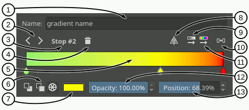Name text field - In this text field you can write a name for the gradient.
Select stop - With these arrow buttons you can select the previous or next stop.
Selected stop label - This label shows the currently selected stop index.
Delete stop - With this button you can delete the currently selected stop.
Gradient slider - This slider is the main part of the editor, where the gradient preview is shown and where you can perform some basic operations to change the gradient:
 on the gradient to add a stop.
on the gradient to add a stop.- on the stop handles (the drop-shaped icons) to select a stop, and drag to move them.
Drag the stop handles outside of the bar or press Delete to remove the selected stop.
Double-
on a stop handle or press Enter to open a color dialog where you can choose the color of the stop.Use the
 or the Left and Right keys to move the selected stop. If you also press Shift the increment will be smaller.
or the Left and Right keys to move the selected stop. If you also press Shift the increment will be smaller.Use Ctrl +
or Ctrl + Left and Ctrl + Right to select the previous or next stop.
Color type - With these three buttons you can select the type of color used by the selected stop (Foreground, Background or custom).
Color button - If the selected stop uses a custom color then you can use this button to open a color dialog and change the color.
Flip gradient - With this button you can reverse the order of the stops in the gradient.
Sort stops by value - Clicking this button will sort the stops by its value.
Distribute stops evenly - Clicking this button will space the stops leaving the same amount of space between them.
Sort stops by hue - Clicking this button will sort the stops by its hue.
Opacity slider - If the selected stop uses a custom color then you can use this slider to change its opacity.
Position slider - This slider allows to fine-tune the position of the selected stop.
As per SVG spec, you can make a sudden change between stops by moving them close together. The stops will overlap, but you can still drag them around:
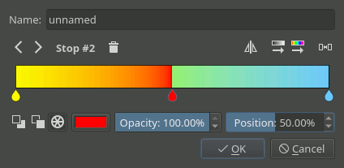Right now, stop gradients are the only ones that are capable of handling colors outside of sRGB.
Segmented Gradients¶
Segmented gradients are a list of gradient segments. A gradient segment has the following properties:
A start and end positions that denote where the segment is placed inside the gradient.
A start and end colors associated with the start and end positions.
4.4 版新加入: Gradients can have segment endpoints that use the currently selected Foreground or Background colors, and those endpoints can be transparent. This makes them dynamic: if a gradient uses the Foreground or Background colors then changing those will also change the gradient appearance. These features allow full compatibility with GIMP gradients.
A blending strategy used to fill the segment inbetween the extreme colors. This strategy is formed by two different properties:
A color model:
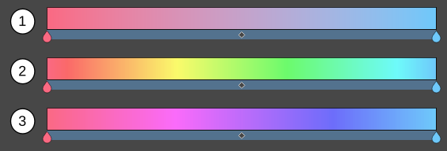RGB - Does the blending in RGB model.
HSV clockwise - Blends the two colors using the HSV model, and follows the hue clockwise (red-yellow-green-cyan-blue-purple). The above screenshot is an example of this.
HSV counter-clock wise - Blends the color as the previous options, but then counter-clockwise.
An interpolation function used to determine how the colors should vary along the segment:
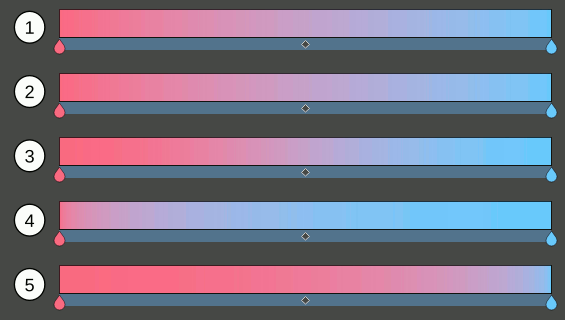Linear - Does a linear blending between both extreme colors.
Curved - This causes the mix to ease-in and out faster.
Sine - Uses a sine function. This causes the mix to ease in and out slower.
Sphere, increasing - This puts emphasis on the later color during the mix.
Sphere, decreasing - This puts emphasis on the first color during the mix.
A segment middle position used to set where the center color obtained with the blending strategy should go. The visual effect is as if you stretched one half of the segment and squashed the other.
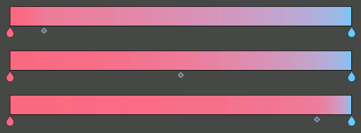
The segmented gradient editor is very similar to the stop gradient editor. The main difference is that you can select three different types of handles to edit the gradient: segment, stop, and middle point handles. When selecting one of these handles the widgets around the gradient slider will change to reflect the actions that you can perform on that handle. For example, for a segment handle you can change the start and end colors (amongst other actions), but for a middle point handle you can only change its position.
Following are a general breakdown and three specific breakdowns of the editor corresponding to the different user interfaces that are presented when the different handles are selected.
- General UI Breakdown
- 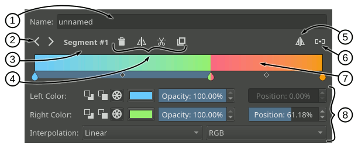
Name text field - In this text field you can write a name for the gradient.
Select handle buttons - With these arrow buttons you can select the previous or next handle.
Selected handle label - This label shows the currently selected handle index.
Handle actions area - In this area will appear some actions you can perform on the selected handle. They vary depending on the type of handle selected.
Flip gradient - With this button you can reverse the order of the segments (and their start and end colors) in the gradient.
Distribute segments evenly - Clicking this button will make all the segments have the same amount of space.
Gradient slider - This slider is the main part of the editor, where the gradient preview is shown and where you can perform some basic operations to change the gradient. These operations basically make changes to the different handles and are explained in the following sections. You can change the selected handle by pressing Ctrl and using
or by pressing Ctrl + Left and Ctrl + Right.Handle properties area - In this area will appear some widgets you can use to change the different properties of the selected handle.
Segment Handle UI Breakdown
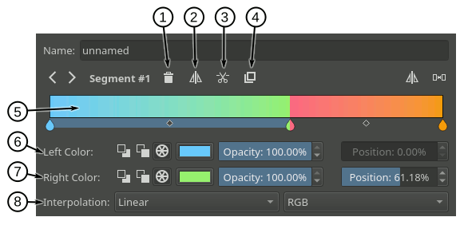
Delete segment - Pressing this button will delete the selected segment (unless it is the only one).
Flip segment - Pressing this button you can reverse the start and end colors of the selected segment as well as its middle point.
Split segment - Pressing this button will divide the selected segment in two, using the segment middle point as the cutting position.
Duplicate segment - Pressing this button will create a copy of the selected segment to its right.
Gradient slider - Here is a list of the segment related actions you can perform on the gradient slider:
You can select a segment by
You can move the whole segment by
You can delete the selected segment by pressing Delete or by dragging it outside the slider area.
You can split a segment by pressing Ctrl and
You can duplicate a segment by pressing Shift and
Left color - In this row of widgets you can change the properties related to the start of the segment:
With the first three buttons you can set the type of color used (Foreground, Background or custom).
Next to the color type buttons will appear a check box when the color type is Foreground or Background that you can use to establish that the color should also be transparent. If the color type is custom, then instead a color button and an opacity slider will appear to let you choose a specific color.
Lastly there is a position slider you can use to fine-tune the start position of the segment. This also changes the end position of the previous segment.
Right color - In this row of widgets you can change the properties related to the end of the segment. They are pretty much the same as the ones explained in the previous point.
Interpolation - In this row you can set the interpolation method and color model used to blend the colors inbetween the segment.
- Stop Handle UI Breakdown
Keep in mind that a segmented gradient is just a list of gradient segments. There isn't really a concept of stop associated with it. The stop handles are just a convention used in the editor to ease the editing of the gradient. When manipulating or changing the properties of a stop handle you are really modifying the end of the segment on the left and the start of the segment on the right synchronously.
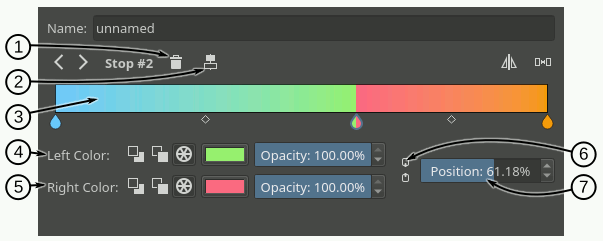Delete stop - Pressing this button will delete the selected stop. Under the hood this action will merge the left and right segments, keeping the start of the left segment and the end of the right segment.
Center stop - Pressing this button will center the stop between the start position of the left segment and the end position of the right segment.
Gradient slider - Here is a list of the stop related actions you can perform on the gradient slider:
You can select a stop handle by
on one of the drop-shaped icons.You can move the stop handle by
and dragging the drop-shaped icon. You can also move the stop handle by using or Left and Right and while doing that, if you also press Shift, then the increment will be smaller. The first and last stop handles can not be moved.You can delete the selected stop by pressing Delete or by dragging it outside the slider area.
You can create a new stop by pressing Ctrl and
on an area of the slider where there is no stop handle or middle point handle. This is exactly the same action as splitting a segment.
Left Color - In this row of widgets you can change the properties related to the end of the segment on the left of the stop:
With the first three buttons you can set the type of color used (Foreground, Background or custom).
Next to the color type buttons will appear a check box when the color type is Foreground or Background that you can use to establish that the color should also be transparent. If the color type is custom, then instead a color button and an opacity slider will appear to let you choose a specific color.
Right color - In this row of widgets you can change the properties related to the start of the segment on the right of the stop. They are pretty much the same as the ones explained in the previous point.
Link colors - If this button is checked then changing the properties on the left color" area will also change the properties on the *right color area and viceversa. Check it if you want the two colors to be synchronized.
Position - you can use this slider to fine-tune the position of the stop. This cahnges the end position of the segment on the left and the start position of the segment on the right.
Middle Point Handle UI Breakdown
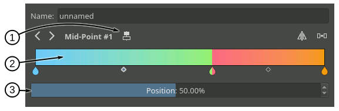
Center middle point - Pressing this button will center the middle point of the selected segment.
Gradient slider - Here is a list of the middle point related actions you can perform on the gradient slider:
You can select a segment middle point by
You can move the middle point by
Position - With this slider you can fine-tune the position of the middle point of the segment.
Compact Gradient Editors¶
In some places in the GUI a compact version of the gradient editors may be used because of the lack of space or other reasons. They just show the gradient slider and all the other functionality that is exposed in the non-compact mode is compacted and moved to the side.
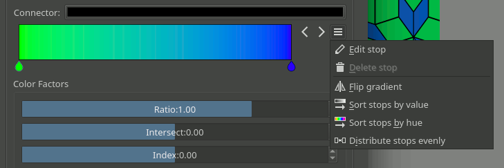Generic Gradient Editor¶
In some places you will find that the previously mentioned gradient preset chooser and editors are shown together and that they are interconnected. When this happens, you are probably using the generic gradient editor, that was introduced to ease the creation and manipulation of gradients.
It's main features are:
Allows you to load/save gradients from/to the gradient resources to/from the editor.
Allows to overwrite an existing gradient resource.
A specific editor is shown automatically depending on the type of the gradient (stop gradient or segmented gradient).
Allows to convert between gradient types
Following is a breakdown of the interface of the editor:
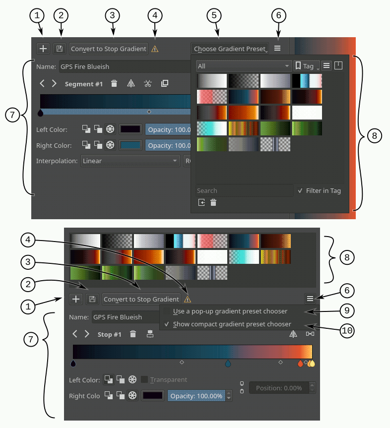Add gradient button - Pressing this button you can add the current gradient to the resources.
Update gradient button - Pressing this button you can overwrite the gradient resource that is currently selected in the gradient chooser. Keep in mind that the type of the gradient resource and the type of the gradient that is currently being edited must match.
Convert gradient button - Pressing this button you can convert the current gradient to a stop gradient if it is a segmented gradient or to a segmented gradient if it is a stop gradient.
Convert gradient warning - This icon will appear when pressing the convert button means that some data or info will be lost in the conversion. This can happen when converting from a segmented gradient to a stop gradient.
Gradient presets button - Pressing this button will pop-up a gradient preset chooser to let you choose a gradient and edit it. This button is only available if the "use a pop-up gradient preset chooser" is checked.
Options button - Pressing this button will show an options menu.
Specific editor area - Here the stop or segmented gradient editor will be shown when a gradient is selected. The specific gradient editors are documented in the previous sections.
Gradient preset chooser - This widget shows a collection of gradient resources and allows you to load one of those gradients into the editor.
Use a pop-up gradient preset chooser - If this option is checked, the gradient preset chooser will be accessed through a pop-up window that is shown by clicking the "choose gradient preset" button; If this option is not checked then the gradient preset chooser is shown inline above all the other widgets.
Show compact gradient preset chooser - If this option is checked, then only the collection of gradient resources is shown, without any surrounding buttons or options. If it is not checked then the gradient preset chooser will also show some extra buttons, like tag filtering or viewing options.